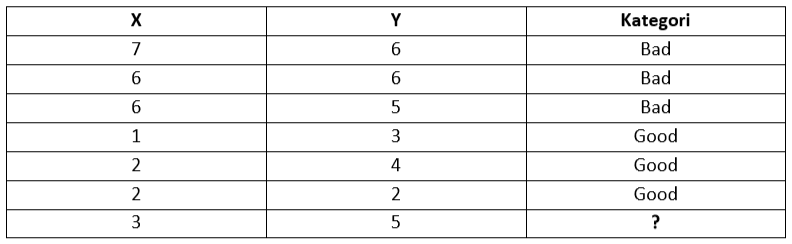

KNN K-Nearest Neighbor
K-Nearest Neighbor¶
Pengertian KNN¶
K-Nearest Neighbor (KNN) adalah suatu metode yang menggunakan algoritma supervised dimana hasil dari query instance yang baru diklasifikan berdasarkan mayoritas darikategori pada KNN. Tujuan dari algoritma ini adalah mengklasifikasikan obyek baru bedasarkan atribut dan training sample. Classifier tidak menggunakan model apapun untukdicocokkan dan hanya berdasarkan pada memori. Diberikan titik query, akan ditemukansejumlah k obyek atau (titik training ) yang paling dekat dengan titik query. Klasifikasimenggunakan voting terbanyak diantara klasifikasi dari k obyek.. algoritma KNNmenggunakan klasifikasi ketetanggaan sebagai nilai prediksi dari query instance yang baru.
Keuntungan Dan Kelemahan KNN¶
Keuntungan
- Sangat sederhana implementasi
- Kuat Dalam hal ruang pencarian, misalnya, kelas tidak harus linear dipisahkan
- Efektif untuk menghitung data dalam skala kecil.
- Beberapa parameter untuk acuan : jarak metrik dan k.
Kelemahan:
- Perlu untuk menentukan nilai k yang optimal sehingga untuk menyatakan jumlah tatangga terdekatnya lebih mudah.
- Biaya komputasi yang cukup tinggi karena perhitungan jarak harus dilakukan pada setiap querry instance.
Algoritma KNN¶
Algoritma metode KNN sangatlah sederhana, bekerja berdasarkan jarak terpendek dari query instance ke training sample untuk menentukan KNN-nya. Training sample diproyeksikan ke ruang berdimensi banyak, dimana masing-masing dimensi merepresentasikan fitur dari data. Ruang ini dibagi menjadi bagian-bagian berdasarkan klasifikasi training sample. Sebuah titik pada ruang ini ditandai kelac c jika kelas c merupakan klasifikasi yang paling banyak ditemui pada k buah tetangga terdekat dari titik tersebut. Dekat atau jauhnya tetangga biasanya dihitung berdasarkan Euclidean Distance.
Langkah yang digunakan dalam metode K-Nearest Neighbor :¶
- Tentukan parameter K (jumlah tetangga paling dekat).
- Hitung kuadrat jarak euclid masing – masing objek terhadap data sample yang diberikan.
- Urutkan objek – objek kedalam kelompok yang memiliki jarak terkecil.
- Kumpulkan kategori Y (Klasifikasi nearest neighbor).
- Dengan kategori nearest neighbor yang paling banyak, maka dapat diprediksikan nilai query instance yang telah dihitung.
Contoh Soal Perhitungan KNN¶
ada data training dua atribut Bad dan Good untuk mengklasifikasikan apakah sebuah data tergolong Bad atau Good

kemudian memberikan data baru yang akan di klasifikasikan, yaitu x = 3 dan y = 5. jadi menentukan apakah data baru tersebut Bad atau Good.
Langkah Penyelesaian
Pertama, tentukan parameter K. misalnya buat jumlah tetangga terdekat K = 3.
Kedua, hitung jarak antara data baru dengan semua data training. menggunakan euclidean Distance.
Ketiga, urutkan jarak dari data baru dengan data training dan menentukan tetangga terdekat berdasarkan jarak minimum K.
Dari kolom 4 (urutan jarak) kita mengurutkan dari yang terdekat ke terjauh antara jarak data baru dengan data training. ada 2 jarak yang sama (yaitu 4) pada data baris 2 dan baris 6, sehingga memiliki urutan yang sama. Pada kolom 5 (Apakah termasuk 3-NN?) maksudnya adalah K-NN menjadi 3-NN , karena nilai K ditentukan sama dengan 3.
Keempat , tentukan kategori dari tetangga terdekat. Kita perhatikan baris 3, 4, dan 5 pada gambar sebelumnya (diatas). Kategori Ya diambil jika nilai K<=3. Jadi baris 3, 4, dan 5 termasuk kategori Ya dan sisanya Tidak.
Kategori ya untuk K-NN pada kolom 6, mencakup baris 3,4, dan 5. Kita berikan kategori berdasarkan tabel awal. baris 3 memiliki kategori Bad, dan 4,5 memiliki kategori Good.
Kelima, gunakan kategori mayoritas yang sederhana dari tetangga yang terdekat tersebut sebagai nilai prediksi data yang baru.
Data yang kita miliki pada baris 3, 4 dan 5 kita punya 2 kategori Good dan 1 kategori Bad. Dari jumlah mayoritas (Good > Bad) tersebut kita simpulkan bahwa data baru (X=3 dan Y=5) termasuk dalam kategori Good.